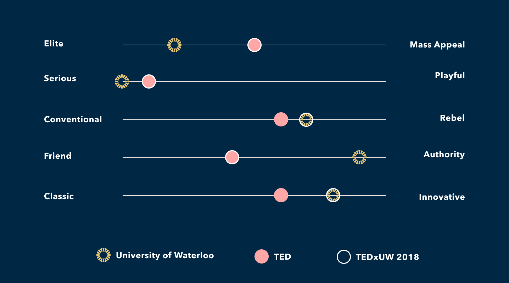
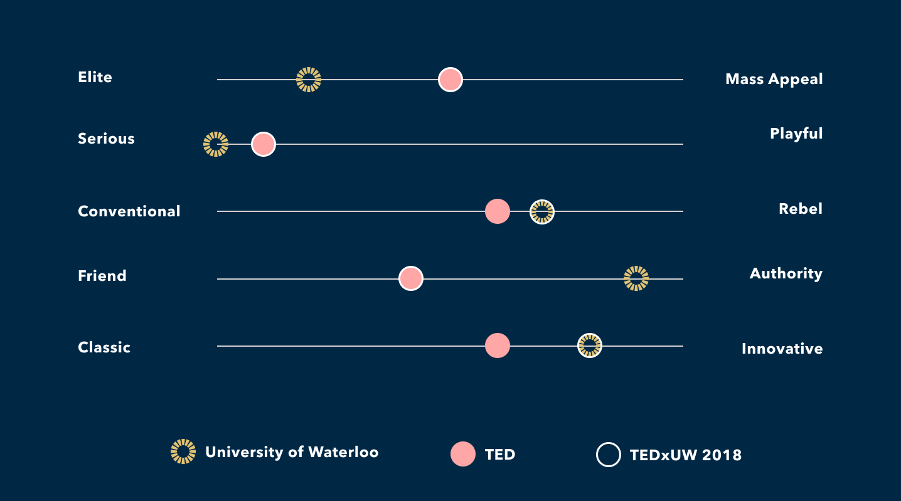
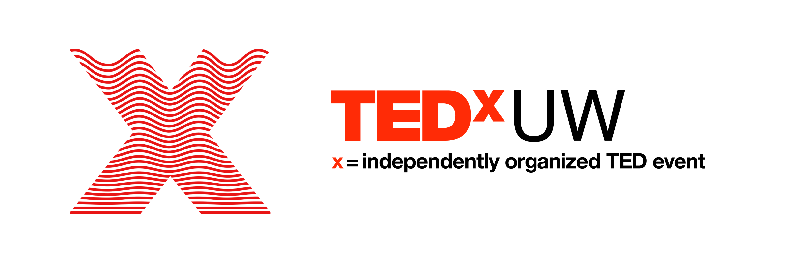
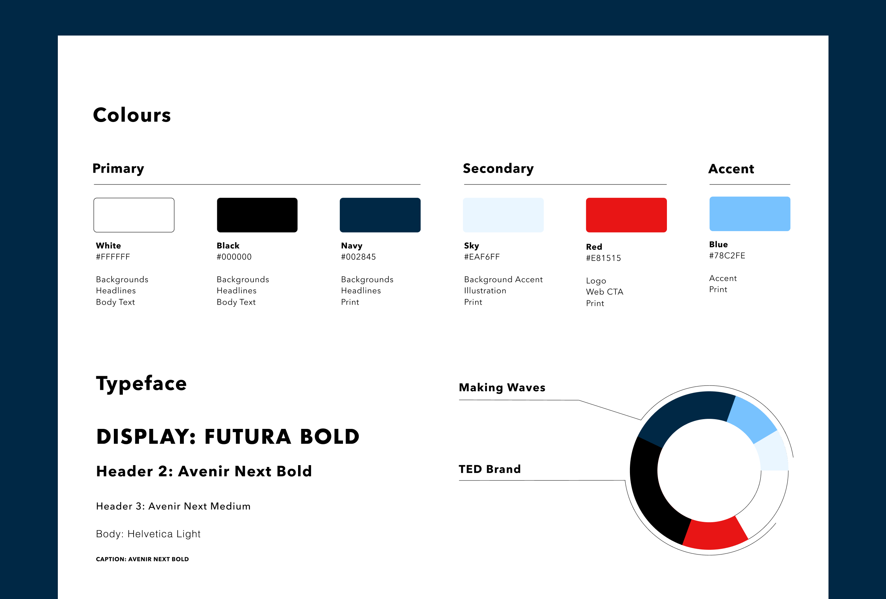
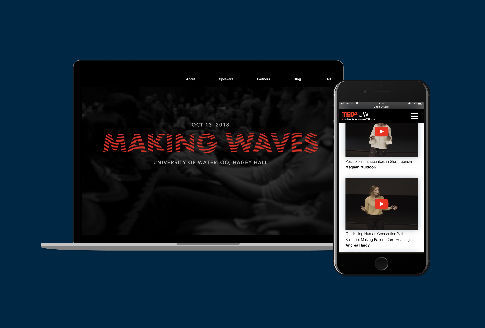
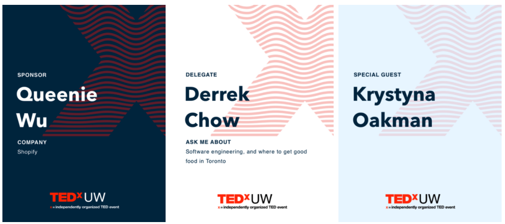
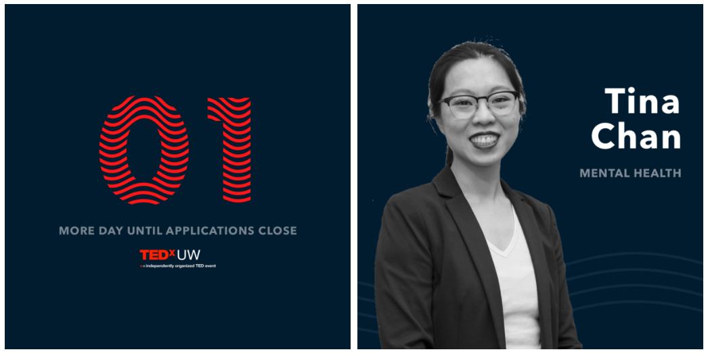

ROLE
As design lead, I directed a design team of 3, worked alongside a content writer, web developer, and a marketing team of 3. Over the course of 4 months, my impact spanned the visual branding of the conference, design of the website, as well as print design for posters, swag, and other collectables for the conference.
Through consistent and clean branding, we reached over 24k clickthroughs on social media, over 1k mailing list signups, over 700 attendees, and numerous testimonies of a day well spent.
THEME
Both TED and the University of Waterloo emphasize the importance of sharing thoughts and insights. But change doesn’t end at the idea, it’s what you do with that idea that matters, which is why we landed on the theme of Making Waves. We hoped that by choosing this theme, we would highlight those in the community that do just that — make waves and change their community.
PRINCIPLES
But before moving into how the brand might look, we needed to determine how the brand should feel. Asking my team members and directors important questions about what TEDxUW stood for them. I translated these values, as well as those of TED and the University of Waterloo, respectively, into a set of personality sliders that fueled decisions behind the brand.
The University of Waterloo, as a younger educational institution driven by innovation, has the reputation of being forward-thinking and disruptive, while TED, an intellectually provoking set of events inspires change and action through a sense of elitism and maturity. For TEDxUW, this means combining the two traits, while making sure we appeal to both the younger student population, as well as the local professional network.

The principles above of dynamic, bold, and poised guided our visual treatments to have a contrasting colour palette and minimalist, trendy illustration accents, combined with a clean, classic typeface and layout.
The University of Waterloo, as a younger educational institution driven by innovation, has the reputation of being forward-thinking and disruptive, while TED, an intellectually provoking set of events inspires change and action through a sense of elitism and maturity. For TEDxUW, this means combining the two traits, while making sure we appeal to both the younger student population, as well as the local professional network.

For our audience to be motivated, empowered, and determined, TEDxUW has to be dynamic, bold, and poised.
The principles above of dynamic, bold, and poised guided our visual treatments to have a contrasting colour palette and minimalist, trendy illustration accents, combined with a clean, classic typeface and layout.
BRAND
As an opportunity to showcase with our principle of being dynamic, I showed the gradual change of a flat line to a sinusoidal wave at the top of the “X”, reflecting that we are here to make change and make waves. By taking the meaning of dynamic literally, I created subtle yet delightful animations for our social media platforms where video and gif formats were supported. This logo is used on all print and digital media that relates to this year’s conference, as well as appearing on any swag that our attendees scored during the day of.  In order to gain consistency and alignment on how TEDxUW is promoted and experienced throughout the community, as well as maintain a level of recognition, we landed on a set of components that would be used throughout and leading up to the event.
Our colour palette is an amalgamation between the classic colours of the TED conference, combined with our choices of blue, navy, and sky to reflect the dynamic and bold principles. Finding the balance between the two contrasting combinations is what sets TEDxUW apart from other TEDx conferences. By injecting navy into the primary palette of black and white, we are able to show our uniqueness without compromising on our poise.
Our typographic voice uses Avenir Next for clean headers, a Helvetica body to surface our seriousness, while leveraging the boldness of Futura in our illustrative and dynamic display titles. This allows for space to be creative in how we showcase our narrative and stories, but still maintain clarity when paragraphs upon paragraphs are needed.

Through outlining rules for how the typeface and colour palette is used throughout the event, we were able to generate recognizability on social media platforms by reaching 3.8K users on Facebook, 2.4K Twitter followers, and over 200 Instagram page viewers per week — eventually doubling our social media following, and attracting over 700 attendees to the event. Not only do our numbers reflect our outreach, we also gained a very diverse group of attendees with students and professors from every faculty attending the day’s event.
In order to guide other team members to create assets that were consistent to the brand direction determined, I put together a style guide in a shared Figma file to best communicate how the visual identity should be carried.
This shared file allowed other members of the organizing team to independently produce visually consistent assets for whatever reason. Instead of the design team having to chime in at every instagram post, sponsor contact, and poster on campus, this style guide helped empower each and every team member to be confident in the assets they were producing, and nearly doubled the productivity of the design team — by not only alleviating our need to produce everything, but by also giving us alignment during more creative explorations.
WEB
Along with directing the visual identity, I also got to be a big part of designing the website live on tedxuw.com — staying true to our typographic voice and colour palette. I worked with Derrek Chow, our Web and UX Manager to shape our corner of the internet.
Drawing from the style guide, we pulled in accents such as the translucent wave to keep the eye drawn to the webpage when blocks of text are used. Additionally, we added a colour treatment to the photos to enhance key images, or dull down visual stimuli when it became too busy.
Through cycles of ideation, iteration, and handoff, we sat side by side to determine the best way to architect the information that was needed as well as leveraging the library of digital media to tell the story behind TEDxUW. We defined the content and how it is structured while still abiding by TEDx website rules — and found that sweet spot between underwhelming and overwhelming.

PRINT
Below, you can find examples of work that were made into production for marketing assets such as social media posts, as well as day-of material like name tags, pamphlets, and pull up banners.
 
REFLECT
As a design lead, I learned about how to efficiently shield my team, give constructive feedback, and be straightforward with expectations. I got the experience of delegating tasks in order to best leverage each member’s skills and interests — and when nobody was up to do it, I learned how to scrape up the remaining pieces to make sure our end product was packaged up and delivered neatly. Being a lead does not only include guiding and mentoring designers with tools, guidelines, and best practices, but it is also watching everyone gain confidence, grow, and improve in their role, including myself!